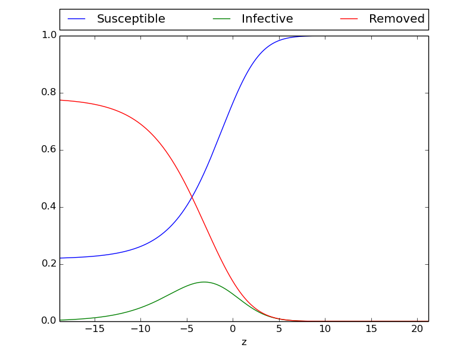

This chapter will introduce a new model for epidemic diseases. While the first chapter was based on a ODE system, will this chapter expand the system to consist of a geographic spread of epidemics. The two first sections will be based on chapters from Murray, while the last part will consist of a modelling of the zombiefication problem explained in chapter 1.
Fisher-Kolmogoroff equation
Simple system for spatial spread
While the systems in the previous chapter only consisted of the temporal variable t in the functions, a spatial variable, x will now be introduced. This means that the position has an effect on the change in each class. The system that will be shown here, will be based on the simple ODE system presented in the previous chapter. The difference will be the diffusion part added to each equation. The system can be seen under
$$
\begin{equation} \label{eq:simple_PDE}
\begin{aligned}
\frac{\partial S}{\partial t} &= -rIS + D\nabla ^2 S\\
\frac{\partial I}{\partial t} &= rIS- aI + D\nabla ^2 I\\
\frac{\partial R}{\partial t} &= aI + D\nabla ^2 R
\end{aligned}
\end{equation}
$$
All three classes have the same diffusion coefficient, \( D \). \( rIS \) and \( aI \) will work in the same way as in the ODE system. Since this model taking into account the position, the idea is here to model a group of infective that moves into a uniform population with susceptible, which is spread around with the density \( S_0 \). Then the geotemporal spread can be seen. The problem will be consider as one-dimensional. The system will first be nondimensionalise by writing
$$
\begin{equation} \label{eq:constants_nondimensional}
\begin{aligned}
I^* =\frac{I}{S_0},&\quad I^* = \frac{I}{S_0},&\quad R^*= \frac{R}{S_0},&\\
x^* =\left(\frac{rS_0}{D}\right)^{1/2}x,&\quad t^*=rS_0t,&\quad \lambda =\frac{a}{rS_0},&
\end{aligned}
\end{equation}
$$
\( S_0 \) is here used as a representative population. Now the model\eqref{eq:simple_PDE} can be expressed under. Here the asterisks have been dropped.
$$
\begin{equation} \label{eq:simple_non_PDE}
\begin{aligned}
\frac{\partial S}{\partial t} &= -IS + \frac{\partial^2 S}{\partial x^2},\\
\frac{\partial I}{\partial t} &= IS- \lambda I + \frac{\partial^2 I}{\partial x^2},\\
\frac{\partial R}{\partial t} &= \lambda I + \frac{\partial^2 R}{\partial x^2},
\end{aligned}
\end{equation}
$$
The three parameters \( r \), \( a \) and \( D \) have now been replaced by \( \lambda \). The reproduction rate that was presented for the ODE model in the previous chapter can be seen by \( 1/\lambda \). This has here a couple of equivalent meanings. \( 1/\lambda \) can be seen as the number of secondary infections produced by one primary infected. It can also be used to measure two different time scales. The first one, \( 1/(rS_0) \), measure the contagious time of the disease. The second one can look at the life expectancy for an infective. This can be described \( 1/a \).
The problem that this part will focus on, is the travelling wave. Here seen by a pulse of infected into a group of susceptible. Then a travelling wave solution has to be set,
$$
\begin{equation}
I(x,t)=I(z),\quad S(x,t)=S(z),\quad R(x,t) = R(z),\quad z = x-ct,
\end{equation}
$$
Here the value \( c \) will be the wave speed. This represents a wave of constant shape that travels in the positive x-direction. These can now be inserted into \eqref{eq:simple_non_PDE}. This gives the following ordinary system
$$
\begin{equation} \label{eq:ord_diff_sys}
\begin{aligned}
S'' + cS' - IS &= 0,\\
I'' + cI' + I(S-\lambda)&=0\\
R'' + cR + I\lambda &=0
\end{aligned}
\end{equation}
$$
This gives an eigenvalue problem to find the range of \( \lambda \) so that \( c \) always will be positive. The values of \( S \), \( I \) and \( R \) also has to stay nonnegative. This leads to
$$
\begin{equation}
\begin{aligned}
0 \leq S(-\infty) < S(\infty)&=1\\
I(-\infty)=I(\infty)&=0,\\
1 \geq R(-\infty)\geq R(\infty) &= 0
\end{aligned}
\end{equation}
$$
This simulation is based on \eqref{eq:ord_diff_sys} with \( \lambda=0.5 \). The initial data is sat to \( S(x,0)=1 \) and \( R(x,0)=0 \). The left side of the Infective class, $I(0,0), is based on a gaussian curve. The rest is sat to be zero.
Figure 1: Four plots
Figure 2: This shows the epidemic wave measures at a certain point
The system\eqref{eq:ord_diff_sys} is a fourth order phase space system. The lower bound time speed for \( c \) can be found. J.D Murray shows this in kite{Murray}. The Infective class in the system\eqref{eq:ord_diff_sys} can be linearised when \( z\rightarrow \infty \) $S\rightarrow 1$ and \( I \rightarrow 0 \). The result then become
$$
\begin{equation}
I'' + cI' + I(S-\lambda) \approx 0
\end{equation}
$$
This can be found by
$$
\begin{equation}
I(z) \varpropto \exp\left[(-c \pm {c^2 -4(1-\lambda)}^{1/2})z/2\right]
\end{equation}
$$
It is required that \( I(z)\rightarrow 0 \), but not under. This means that the solution cannot oscillate around 0. If a travelling wave exist, it has to satisfy
$$
\begin{equation}
c \geq 2(1-\lambda)^{1/2}, \lambda< 1
\end{equation}
$$
If \( \lambda > 1 \), no travelling wave will exist. Then the disease will die out. The terms defined in \eqref{eq:constants_nondimensional} will give the threshold conditions,
$$
\begin{equation}
\lambda = \frac{a}{rS_0} < 1
\end{equation}
$$
This is the same value that was given for the ODE model in the previous chapter.
From 1D to 2D
Since an epidemic disease will spread geograpically, it will be interesting to look at the
A gaussian wave
Figure 3: Four plots
A gaussian function at 0,0
Travelling wave is similar wherever it is checked
Figure 4: Four plots
Figure 5: Four plots

Compare the values from 1D and 2D by making a table
Result: Looks from the plots that there is no change(as expected)
Change in initial flow
Figure 6: Four plots
Figure 7: Four plots
Result: Looks from the plots that the travelling wave appears ealier, but has the same size. This can be explained by "Child on a slede"
Chage in the lambda
Epidemic in an English Boarding school 1978
This example was presented in the previous chapter as an ODE system. This example was based on the book from J.D Murray.
Classes are uniformly spread and it is equal probability for contact. Modeled in the school yard on 100m2. The consentration of students are given in number of students per 1m2
Introducing a Gaussian distribution
Gaussain from the corner
Appendix
Discretizate PDE system for a 2D model
The following PDE system from \eqref{eq:simple_non_PDE} is discretized. Forward Euler is chosen for time derivative and Crank Nicolson for spatial derivative.
$$
\begin{equation}
\begin{aligned}
\frac{S^{n+1}_{i,j}-S^n_{i,j}}{\Delta t} &= -I^{n}_{i,j}S^{n}_{i,j} + D\left(\frac{S^{n}_{i-1,j}-2S^{n}_{i,j}+S^{n}_{i+1,j}}{\Delta x}+\frac{S^{n}_{i,j-1}-2S^{n}_{i,j}+S^{n}_{i,j+1}}{\Delta y}\right) \\
\frac{I^{n+1}_{i,j}-I^n_{i,j}}{\Delta t} &= I^{n}_{i,j}S^{n}_{i,j} -\lambda I^{n}_{i,j} + D\left(\frac{I^{n}_{i-1,j}-2I^{n}_{i,j}+I^{n}_{i+1,j}}{\Delta x}+\frac{I^{n}_{i,j-1}-2I^{n}_{i,j}+I^{n}_{i,j+1}}{\Delta y}\right) \\
\frac{R^{n+1}_{i,j}-R^n_{i,j}}{\Delta t} &= \lambda I^{n}_{i,j}+D\left(\frac{R^{n}_{i-1,j}-2R^{n}_{i,j}+R^{n}_{i+1,j}}{\Delta x}+\frac{R^{n}_{i,j-1}-2R^{n}_{i,j}+R^{n}_{i,j+1}}{\Delta y}\right)
\end{aligned}
\end{equation}
$$
Now the known values can be placed on the right side. The system will then be
$$
\begin{equation}
\begin{aligned}
S^{n+1}_{i,j} &= S^{n}_{i,j}+\Delta t\left(-I^{n}_{i,j}S^{n}_{i,j} + D\left(\frac{S^{n}_{i-1,j}-2S^{n}_{i,j}+S^{n}_{i+1,j}}{\Delta x}+\frac{S^{n}_{i,j-1}-2S^{n}_{i,j}+S^{n}_{i,j+1}}{\Delta y}\right)\right) \\
I^{n+1}_{i,j} &= I^{n}_{i,j}+\Delta t\left(I^{n}_{i,j}S^{n}_{i,j} -\lambda I^{n}_{i,j} + D\left(\frac{I^{n}_{i-1,j}-2I^{n}_{i,j}+I^{n}_{i+1,j}}{\Delta x}+\frac{I^{n}_{i,j-1}-2I^{n}_{i,j}+I^{n}_{i,j+1}}{\Delta y}\right)\right) \\
R^{n+1}_{i,j} &= R^{n}_{i,j}+\Delta t\left(\lambda I^{n}_{i,j}+D\left(\frac{R^{n}_{i-1,j}-2R^{n}_{i,j}+R^{n}_{i+1,j}}{\Delta x}+\frac{R^{n}_{i,j-1}-2R^{n}_{i,j}+R^{n}_{i,j+1}}{\Delta y}\right)\right)
\end{aligned}
\end{equation}
$$